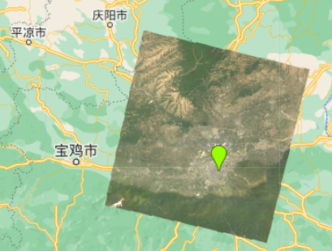
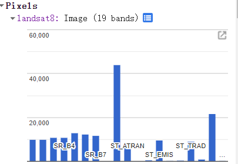
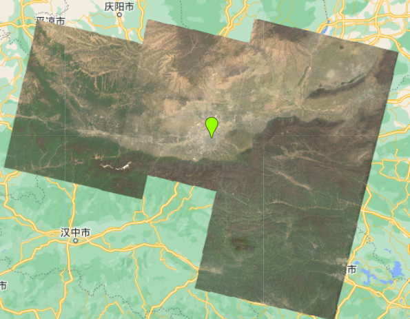
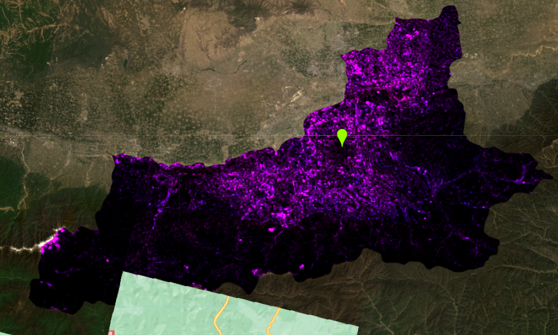
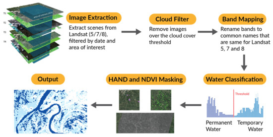

5 Google Earth Engine
5.1 Summary
5.1.1 Introduction to the Google Earth Engine
Google Earth Engine combines data from hundreds of satellites and Earth observation datasets with powerful cloud computing to display high-resolution, timely and accurate remote sensing information, providing a platform for remote sensing data analysis.
Strength: It permits geospatial analysis at scale + massive datasets + planetary scale analysis + quickly (within seconds)
5.1.2 How to use the GEE
- use the javascript code
var to define the variable
ee to acquire the EO data - some items
Geometry : point/line/polygon with no attributes
Feature : geometry with attributes
Feature collection : several features with attributes, and it can be used for the storage, querying, analysis and visualisation of geographical information.
ImageCollection : A collection of multiple satellite images (Images). These images can be from different times, sensors, resolutions etc. They can be used to study different surface features such as vegetation cover, land use, climate change,eg:ee.ImageCollection(‘LANDSAT/LC08/C02/T1_L2’)
5.1.2.1 Set the Geometry
//select the point
var point = ee.Geometry.Point([108.95000, 34.26667])
Map.centerObject(Xian, 10)5.1.2.2 Load and filter the EO data
var oneimage_study_area_cloud = ee.ImageCollection("LANDSAT/LC08/C02/T1_L2")
.filterDate('2019-01-01', '2022-12-10')
.filterBounds(xian) // Intersecting ROI
.filter(ee.Filter.lt("CLOUD_COVER", 0.1));
It shows the band information of landsat8 in the “Inspector”

Load the single image
“127036” represents the longitude and latitude, and “20220517” represents the date I want to acquire.
var image = ee.Image('LANDSAT/LC08/C02/T1_L2/LC08_127036_20220517')
var rgbvis = {
bands: ['SR_B4','SR_B3','SR_B2'],
min: 5000,
max: 15000};
Map.addLayer(image,rgbvis,"landsat8");
5.1.2.3 Texture measures
var glcm = clip.select(['SR_B1', 'SR_B2', 'SR_B3', 'SR_B4', 'SR_B5', 'SR_B6', 'SR_B7'])
.multiply(1000)
.toUint16()
.glcmTexture({size: 1})
.select('SR_.._contrast|SR_.._diss')
.addBands(clip);
Map.addLayer(glcm, {min:14, max: 650}, 'glcm');
5.1.2.4 Linear regression
- OLS regression
If we want to see the change over time in pixel values - linearFit()
linearFit() takes a least squares approach of one variable. Band 1: dependent variable Band 2: independent variable (often time)
var linearFit = collection.select(['dependent variable', 'independent variable']).reduce(ee.Reducer.linearFit());- Muitiple linear regression Create feature sets containing independent and response variables
Fit multiple linear regression using feature sets
Extracting the coefficients and intercepts of the model
5.1.2.5 Join
- join
- geo-join
- intersect For example, this line of code uses the distSaveAll.apply function to calculate the intersection between each point in the powerPlants dataset and each circular buffer in the power_buffer dataset.
var intersect = distSaveAll.apply(power_buffer, powerPlants, spatialFilter);
print(power_buffer, "power_buffer");
Map.addLayer(intersect, {}, 'intersect');
print(intersect, "intersect");Source: Intersect
5.1.2.6 NDVI
This fuction can calculate the NDVI directly.
var NDVI = clip.normalizedDifference([SR_B5, SR_B4]);5.2 Application
Mapping of Flood Areas Using Landsat with Google Earth Engine(Goodin, Anibas, and Bezymennyi 2015)
The flood mapping algorithm is presented in this study. The algorithm uses Landsat data to generate historical global flood extent at 30m resolution. Landsat satellite images from 1984 to the present were first collected, pre-processed with layer filtering to classify water bodies, and “temporary” waters were selected as areas that were inundated during the flood event.

The application of this research has a significant role to play in land use, emergency avoidance. For example，Identifying those locations which are at risk of flooding can allow for optimization of resources and investment such as upgrading infrastructure, developing agriculture, etc., in the short term. On the other hand, this will allow governments, funding agencies and disaster management authorities to drill down to the locations of highest potential risk and generate higher resolution models.
5.3 Relection
Through this week, I have learnt about the powerful remote sensing data analysis capabilities of GEE and have learnt the basic operation of the GEE platform. Reading through the literature the GEE platform can help decision makers in urban related professional fields to better understand the dynamics of urban development. Through remote sensing technology, changes in urban development can be monitored in real time, including changes in urban sprawl, building heights, traffic flow, etc. This information can provide strong data to support urban planning and policy. For example, to review the analysis of the New York heat island problem in week four, we can use the GEE and landsat remote sensing datasets to visualise and analyse the temperature of New York City and calculate the heat island intensity, I have accessed the relevant code materials and read them, which will be of great help to me in my subsequent report.